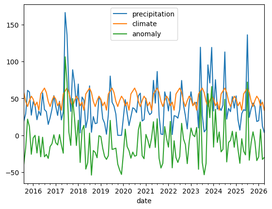

station_ids = pandas.read_csv("data/Niederschlag_1981-2010_Stationsliste.txt", encoding="iso-8859-1", delimiter=" *; *", #star to include any number of spaces index_col="Stations_id", engine="python") #read the file
station_ids #show an overview
Stationsname
geogr. Breite
geogr. Laenge
Stationshoehe
Bundesland
Unnamed: 6
Stations_id
1
Aach
47.841299
8.849299
478.0
Baden-Württemberg
NaN
2
Aachen (Kläranlage)
50.806581
6.099638
138.0
Nordrhein-Westfalen
NaN
3
Aachen
50.782659
6.094087
202.0
Nordrhein-Westfalen
NaN
4
Aachen-Brand
50.768313
6.120705
243.0
Nordrhein-Westfalen
NaN
6
Aalen-Unterrombach
48.836072
10.059764
455.0
Baden-Württemberg
NaN
...
...
...
...
...
...
...
19697
Wassertrüdingen/Wörnitz
49.046341
10.602684
435.0
Bayern
NaN
19698
Werda/Vogtland
50.448020
12.305168
595.0
Sachsen
NaN
19701
Wertingen/Zusam
48.557500
10.674167
430.0
Bayern
NaN
19706
Oberndorf am Neckar
48.285077
8.576395
516.0
Baden-Württemberg
NaN
19781
Ingolstadt
48.742909
11.423324
367.0
Bayern
NaN
5740 rows × 6 columns
station_ids.columns #tell us which columns are there
station_ids.groupby("Bundesland").count().sort_values("Stationsname")# split dataset into groups (Bundesland), count the members of each group and sort by name
Stationsname
geogr. Breite
geogr. Laenge
Stationshoehe
Bundesland
Bremen
15
15
15
15
Hamburg
19
19
19
19
Berlin
29
29
29
29
Saarland
54
54
54
54
Schleswig-Holstein
223
223
223
223
Mecklenburg-Vorpommern
237
237
237
237
Rheinland-Pfalz
264
264
264
264
Brandenburg
302
302
302
302
Sachsen
356
356
356
356
Thüringen
391
391
391
391
Sachsen-Anhalt
411
411
411
411
Hessen
436
436
436
436
Nordrhein-Westfalen
436
436
436
436
Niedersachsen
611
611
611
611
Baden-Württemberg
619
619
619
619
Bayern
1337
1337
1337
1337
mask=station_ids.Bundesland=="Bayern"#when "Bayern" is true or false
station_ids[mask]
Stationsname
geogr. Breite
geogr. Laenge
Stationshoehe
Bundesland
Stations_id
10
Abbach,Bad-Dünzling
48.885697
12.107925
378.0
Bayern
15
Abenberg
49.234641
10.966676
391.5
Bayern
16
Abenberg-Wassermungenau
49.219251
10.884495
370.0
Bayern
17
Abensberg-Sandharlanden
48.842100
11.819366
380.0
Bayern
24
Achthal
47.833300
12.783300
582.0
Bayern
...
...
...
...
...
...
19694
Tittmoning/Oberbayern
48.066895
12.763446
382.0
Bayern
19695
Untergriesbach/Niederbayern
48.599508
13.646542
495.0
Bayern
19697
Wassertrüdingen/Wörnitz
49.046341
10.602684
435.0
Bayern
19701
Wertingen/Zusam
48.557500
10.674167
430.0
Bayern
19781
Ingolstadt
48.742909
11.423324
367.0
Bayern
1337 rows × 5 columns
bayern=station_ids[mask] # start a new subgroup assigned as bayern
Precipitation Data (exercise Alexanderplatz and follow up)
get a list of stations in Berlin
figure out the station ID of Berlin Alexanderplatz
load the 30 year mean precipitation data “data/Niederschlag 1981-2010.txt”
only keep the columns with the monthly means
precip_ref = pandas.read_csv("data/Niederschlag_1981-2010.txt", # get all precipitation encoding="iso-8859-1", delimiter=" *; *", index_col="Stations_id", engine="python")
precip_ref = precip_ref.loc[:,"Jan.":"Dez."] #get monthly mean precipitation
precip_ref.loc[399] # monthly mean precipitation on Berlin Alexanderplatz (ID=399)
Jan. 49.0
Feb. 40.0
März 45.0
Apr. 34.0
Mai 56.0
Jun. 60.0
Jul. 64.0
Aug. 58.0
Sept. 46.0
Okt. 39.0
Nov. 47.0
Dez. 53.0
Name: 399, dtype: float64
precip["date_time"]=pandas.to_datetime(precip.MESS_DATUM, format="%Y%m%d%H")#take the column and convert the numbers into the given data format (we overwrite the column)
precip_alex=precip_alex.rename(columns={"date_time" : "date","NIEDERSCHLAGSHOEHE" : "precipitation"})# rename the columns and overwrite the previous precip_alex
Jan. 49.0
Feb. 40.0
März 45.0
Apr. 34.0
Mai 56.0
Jun. 60.0
Jul. 64.0
Aug. 58.0
Sept. 46.0
Okt. 39.0
Nov. 47.0
Dez. 53.0
Name: 399, dtype: float64
monthly.groupby(monthly.index.month).describe() #for each year groups our data by month
precipitation
climate
anomaly
count
mean
std
min
25%
50%
75%
max
count
mean
...
75%
max
count
mean
std
min
25%
50%
75%
max
date
1
11.0
43.080909
14.963813
19.80
33.0000
45.530
51.7750
69.42
11.0
49.0
...
49.0
49.0
11.0
-5.919091
14.963813
-29.20
-16.0000
-3.470
2.7750
20.42
2
11.0
38.052727
19.801915
3.24
24.7600
39.990
48.1950
75.33
11.0
40.0
...
40.0
40.0
11.0
-1.947273
19.801915
-36.76
-15.2400
-0.010
8.1950
35.33
3
11.0
26.577273
16.599816
1.02
14.3900
27.990
39.2900
51.87
11.0
45.0
...
45.0
45.0
11.0
-18.422727
16.599816
-43.98
-30.6100
-17.010
-5.7100
6.87
4
11.0
26.310909
15.251537
1.41
17.0500
29.420
35.6550
47.56
11.0
34.0
...
34.0
34.0
11.0
-7.689091
15.251537
-32.59
-16.9500
-4.580
1.6550
13.56
5
10.0
30.115000
17.810316
10.03
25.2225
27.720
33.1750
74.44
10.0
56.0
...
56.0
56.0
10.0
-25.885000
17.810316
-45.97
-30.7775
-28.280
-22.8250
18.44
6
10.0
62.480000
46.832982
22.91
34.4625
42.310
74.5300
166.30
10.0
60.0
...
60.0
60.0
10.0
2.480000
46.832982
-37.09
-25.5375
-17.690
14.5300
106.30
7
10.0
71.625000
43.327513
27.16
35.3325
55.925
106.2875
136.10
10.0
64.0
...
64.0
64.0
10.0
7.625000
43.327513
-36.84
-28.6675
-8.075
42.2875
72.10
8
11.0
30.906364
21.515000
4.12
20.4300
27.030
35.8800
74.27
11.0
58.0
...
58.0
58.0
11.0
-27.093636
21.515000
-53.88
-37.5700
-30.970
-22.1200
16.27
9
11.0
27.925455
15.035998
1.70
20.0650
29.190
36.3100
53.48
11.0
46.0
...
46.0
46.0
11.0
-18.074545
15.035998
-44.30
-25.9350
-16.810
-9.6900
7.48
10
11.0
40.480909
32.242088
0.00
19.8100
32.090
58.9950
95.41
11.0
39.0
...
39.0
39.0
11.0
1.480909
32.242088
-39.00
-19.1900
-6.910
19.9950
56.41
11
11.0
39.063636
25.046306
0.00
17.9900
38.760
58.7200
70.93
11.0
47.0
...
47.0
47.0
11.0
-7.936364
25.046306
-47.00
-29.0100
-8.240
11.7200
23.93
12
11.0
41.870909
30.349011
0.00
24.3400
39.200
50.5300
119.06
11.0
53.0
...
53.0
53.0
11.0
-11.129091
30.349011
-53.00
-28.6600
-13.800
-2.4700
66.06
12 rows × 24 columns
monthly.plot()

refs=pandas.DataFrame({"precipitation":precip_ref.loc[399].to_list()*12}, index=pandas.date_range("2015-01-01", "2026-12-31", freq="ME"))# create a new DataFrame with only one column: precipitation# from climate data grab Alexanderplatz and convert it to a list, repeat this 12 times
refs
precipitation
2015-01-31
49.0
2015-02-28
40.0
2015-03-31
45.0
2015-04-30
34.0
2015-05-31
56.0
...
...
2026-08-31
58.0
2026-09-30
46.0
2026-10-31
39.0
2026-11-30
47.0
2026-12-31
53.0
144 rows × 1 columns
monthly["climate"] = refs # create a new column: climate
monthly
precipitation
climate
anomaly
date
2015-08-31
18.90
58.0
-39.10
2015-09-30
29.19
46.0
-16.81
2015-10-31
60.91
39.0
21.91
2015-11-30
58.59
47.0
11.59
2015-12-31
27.34
53.0
-25.66
...
...
...
...
2025-12-31
18.73
53.0
-34.27
2026-01-31
19.80
49.0
-29.20
2026-02-28
48.08
40.0
8.08
2026-03-31
12.36
45.0
-32.64
2026-04-30
4.00
34.0
-30.00
129 rows × 3 columns
monthly.plot()
monthly["anomaly"]=monthly.precipitation - monthly.climate#to just get the defference between the general mean precipitation and the mean precipitation on Alexanderplatz
monthly.anomaly.plot()# many spikes in minus-area, so Berlin is dryer